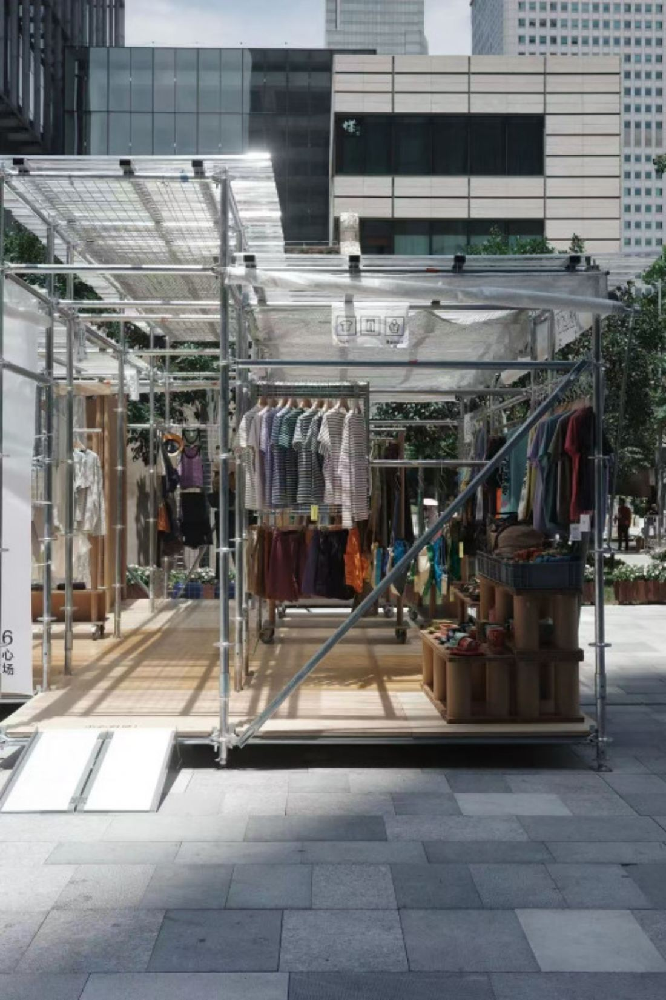
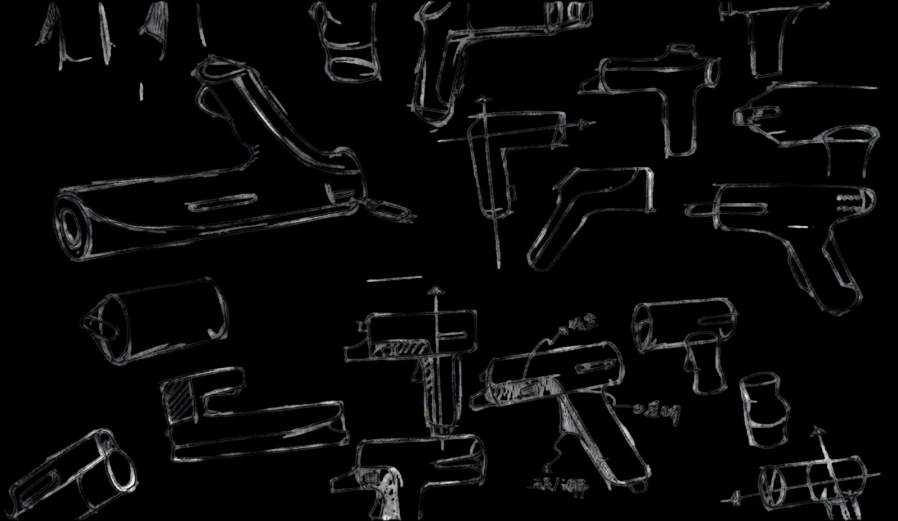
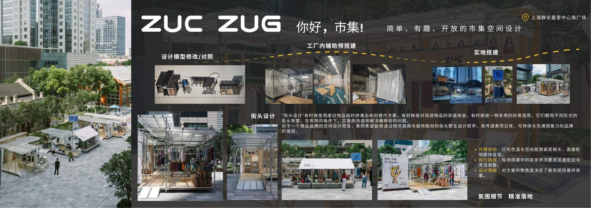

Brief / 设计简介
以街头智慧搭建一座市集
「街头设计」有时候是用废旧物品临时拼凑出来的替代方案，有时候是对现成物品的改造改良，有时候是一物多用的妙用混用，它们都用不同形式的街头智慧，在有限的条件下，实惠而快速地解决着眼前的问题。
对于一个商业品牌的空间设计而言，「素然」希望通过物尽其用与就地取材的街头野生设计哲学，来传递其日常、可持续与充满想象力的品牌价值观。
Street design is sometimes a temporary patchwork of discarded objects, sometimes a modification of ready-made items, sometimes a clever multi-use of one thing. This project applies that street wisdom to a brand space on a tight site and a tight schedule.
- 设计哲学
- 物尽其用 · 就地取材的街头野生设计。
- 品牌价值
- 日常 · 可持续 · 充满想象力。
- 空间特征
- 简单 · 有趣 · 开放的市集空间。
设计价值定位 / Value Positioning
Philosophy / 街头哲学
三种街头智慧，一套野生设计哲学
街头智慧 / Street Wisdom
01 — 03-
01
临时拼凑Patchwork
用废旧物品临时拼凑出来的替代方案。
-
02
改造改良Modification
对现成物品的改造改良。
-
03
一物多用Multi-use
一物多用的妙用混用。
在有限的条件下，实惠而快速地解决眼前的问题。
传递素然日常、可持续与充满想象力的品牌价值观。
Site / 场地布局
静安嘉里中心南广场，四面可进入的开放市集

开放式布局
不设围墙，四面可进入，让路过的人自然成为市集的一部分。
功能单元
脚手架模块化组合出服装陈列、咖啡与休憩等不同功能单元。
自由动线
在广场人流动线中嵌入市集，让人群自由穿行与停留。
品牌表达
以空间传递素然「日常、可持续」的品牌气质。
Strategy / 空间策略
就地取材的六个空间策略
就地取材
以脚手架、木板、帆布等基础材料搭建，材料可回收、可复用，减少一次性的展陈消耗。
脚手架系统
用标准化脚手架构成骨架，模块化组合出服装陈列、咖啡与休憩等不同功能单元。
工厂内预搭建
先在工厂完成模型修改与对照、构件预搭建，把不可控的现场变量提前解决。
快速落地
现场按预搭建逻辑快速组装，在有限的搭建窗口内完成整体空间。
氛围细节
灯光色温与空间氛围紧密相关，直接影响服饰呈现；细节决定了空间的「温度」。
开放式布局
不设围墙，四面可进入，让路过的人自然成为市集的一部分。
Detail / 现场细节
摊位单元、陈列细节与材料清单


材料清单 / Materials
Recyclable · Reusable- 标准化脚手架
- 木板
- 连接构件
- 帆布
- 灯串
- 品牌印刷物
所有基础材料均可回收、可复用，市集撤场后材料回到下一次搭建中继续服役。
Process / 搭建流程
从模型对照到实地搭建的四步流程
设计模型修改 / 对照
在模型阶段反复修改与对照，确认结构与比例。
工厂内辅助预搭建
在工厂完成构件预搭建，把不可控的现场变量提前解决。
实地搭建
现场按预搭建逻辑快速组装，在有限窗口内完成整体空间。
氛围与陈列调整
调整灯光色温与陈列细节，把控空间的最终「温度」。
先在工厂把不可控的变量提前解决，现场只回答一个问题：如何快速而准确地还原设计。
Challenge / 挑战成果
氛围细节，精准落地
环境感知
灯光色温与空间氛围紧密相关，直接影响服饰呈现。
- 灯光色温
- 空间氛围
- 服饰呈现
执行挑战
现场搭建中的突发状况要求迅速反应与灵活调整。
- 突发状况
- 迅速反应
- 灵活调整
设计理解
对方案的熟悉度决定了能否把控最终效果。
- 方案熟悉度
- 效果把控
- 精准落地
可拆卸、可复用的市集组件，低成本、就地取材的材料策略。
完成品牌「日常、可持续」的空间表达。
Process / 原始展板
预搭建与实地搭建原始展板
点击展板可放大查看原始排版与全部细节标注。
